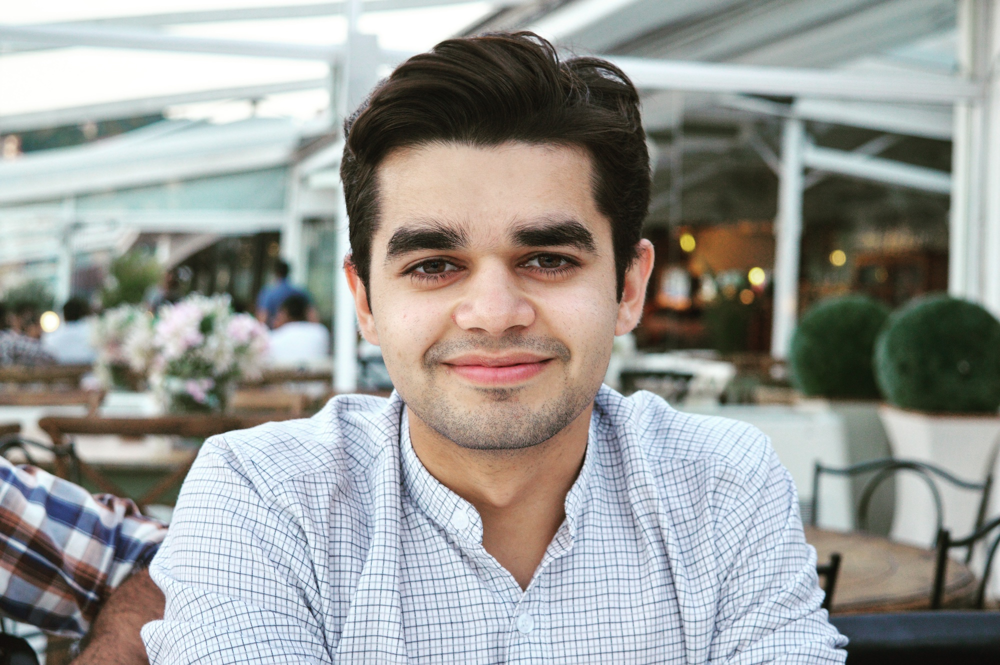

I did my undergraduate in Computer Science from
Lahore University of Management Sciences (LUMS) in Pakistan. During this time, I was chosen to spend a summer at the
Koç University Arçelik Research (KUAR) design lab to work on a project aimed at developing a system that made use of
Spatial Augmented Reality (SAR). Additionally, as a computer scientist, I've worked on multiple projects that have demanded from me expertise in computer vision, software and web development.
Right after graduating, I worked as a traditional animator for
Mano Animation Studios on Pakistan's first hand-drawn animated feature film. This helped me improve immensely as an artist, animator and storyteller.
In March of 2018, I was selected as 1 of
Young Sustainable Impact's (YSI) 21 Young Leaders globally out of a pool of 9000 applicants. Together with YSI, I'm engaged in creating an impact startup aimed at creating accessible quality education for the masses.
I'm currently pursuing a graduate degree in Entertainment Technology at
Carnegie Mellon University. I am the class of 2020.
I love to draw, I love to travel and I love making people happy.

Above: A picture of my face.
My resume can be accessed here:
Muhammad's Resume
Also, you can talk to me here:
Talk to Muhammad